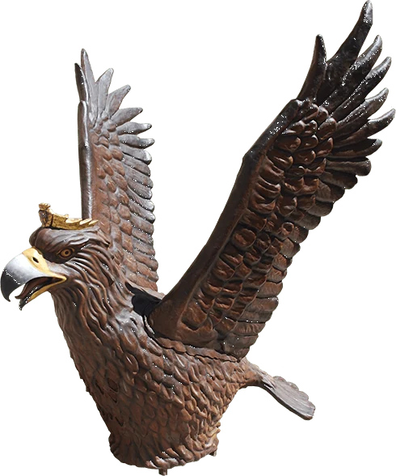

L'Àliga de la Ciutat
Una àliga coronada que ja va volar per Badalona al segle XIX i va tornar a baixar del cel el 1998.

A Badalona ja havia existit una àliga a finals del segle XIX, coneguda com a l’Àliga d’en Santigosa. Li donaren aquest nom en honor al seu constructor, regidor de l’Ajuntament Badalona i nascut a Olot. El senyor Santigosa, a l’hora de dissenyar aquesta figura festiva, segurament s’inspirà en l’Àliga de la seva població natal i la regalà a la nostra vila al 1883. Es té constància que aquell mateix any va començar a sortir pels carrers de la vila, tot participant a les cercaviles de Festa Major i als actes institucionals, tal i com li pertoca a aquest element festiu. Segons “Eco Badalona”, la revista de la ciutat d’aleshores, el dissabte dia 11 d’agost de 1894 (any en el que l’Ajuntament adquirí els gegants de la Confraria de Sant Anastasi) i dins del marc de la Festa Major, els gegants, els capgrossos i l’Àliga sortiren de la Casa de la Vila a les 8 del matí per a recórrer els carrers de Badalona acompanyats pel flabiol i el tamborí. La àguila (així s'anomenava aleshores) va sortir almenys fins la Festa Major de 1897, segons els diversos programes de la festa.
Un segle després de la desaparició de l’Àliga, i coincidint amb la celebració del primer centenari del títol de ciutat, es proposà recuperar aquest element festiu. I així fou com la Nit de Sant Anastasi de 1998 una Àliga coronada amb les ales desplegades baixà volant des del cel fins al bell mig de la Plaça de la Vila, on s’estrenà el Ball de l’Àliga de Badalona. A partir de llavors, un cop acabats els balls de plaça, s'inicià, per primer cop, el Seguici de l'Àliga amb la música del “Seguici Pallarès” on els membres de les entitats de cultura tradicional i popular obrien camí aguantant torxes enceses pels carrers enfosquits per la nit acompanyant l’Àliga, els gegants Anastasi i Maria, i les autoritats municipals fins a la Rambla.
A partir de l’any 2006 es reformula el model de la Nit de Sant Anastasi, i passa a ser tal i com és ara. Tot i això l'Àliga ha mantingut el "Seguici Pallarès", com a música que l'acompanya, interpretada per la Banda Simfònica de Badalona i precedint les autoritats.
Actualment l’Àliga fa el seu ball el dia del Pregó de les Festes de Maig (amb música a càrrec de la Banda Simfònica de Badalona); davant de Roca i Pi a la Rambla, durant la Nit de Sant Anastasi; a l’Ofici Solemne de Sant Anastasi dins l’Església de Santa Maria (al so del flabiol o de flautes travesseres), i a la Plaça de la Plana per la Diada Nacional de Catalunya, a més de participar a la Processó del Corpus pel mes de juny.
Què balla?
El Ball de l'Àliga de Badalona es va estrenar el 10 de maig de 1998 a la Plaça de la Vila. La música va ser composada per Daniel Sunyer.
Fitxa tècnica
| L'Àliga de la Ciutat | |
|---|---|
| Alçada | 2,40 m |
| Llargada | 2,32 m |
| Pes | 53 kg |
| Any de construcció | 1998 |
| Constructor | Jordi Grau |